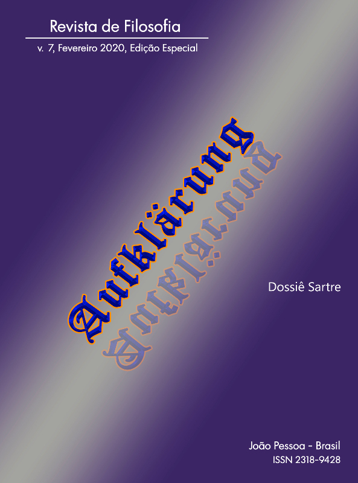

Ir para o conteúdo principal
Ir para o menu de navegação principal
Ir pro rodapé
Inicio
Atual
Arquivos
Notícias
Sobre
Sobre a Revista
Equipe Editorial
Ficha Catalográfica
Contato
Submissões
Declaração de Privacidade
Informações
Buscar
Buscar
3142936
9
Painel de Controle
9
Perfil
Sair do sistema
Início
/
Arquivos
/
v. 7 n. Especial (2020): Dossiê Sartre

Dossiê Sartre
Publicado:
2020-02-19
Editorial
Apresentação
Claudinei Aparecido de Freitas da Silva
p.7-10
PDF
Artigos
Revolução estética - a livre invenção de espaços de liberdade
Luciano Donizetti da Silva
p.11-24
PDF
Filosofia e literatura: em torno de A náusea
Luiza Helena Hilgert
p.25-38
PDF
Les Mouches: liberdade situada e reflexividades em Jean-Paul Sartre
Marivania Cristina Bocca, Tiago Soares dos Santos
p.39-50
PDF
A experiência do non-sens em Roquentin: a Náusea sob as lentes da psicanálise
Renato Santos
p.51-64
PDF
O caráter nadificador da consciência imaginante
Lucas Rodrigues da Fonseca Lopes
p.65-76
PDF
A Fenomenologia de Heidegger e Sartre em suas diferenças
Daniela Ribeiro Schneider
p.77-92
PDF
Literatura e Humanismo: Fenômenos éticos no confronto entre Sartre e Dostoiévski
Cristiane Picinini
p.93-102
PDF
O fenômeno da angústia: interfaces entre Graciliano Ramos e Sartre
Camila Pacheco Gomes
p.103-114
PDF
A estética do movimento: uma leitura sartriana da psicoterapia a partir da arte de Alberto Giacometti
Georges Daniel Janja Bloc Boris, Daniel Marcio Pereira Melo
p.115-126
PDF
El existencialismo de Sartre, origenes y contextos: Una lectura a partir de Hannah Arendt
Gerardo Miguel Nieves-Loja
p.127-136
PDF
Aportes clínicos sartrianos III: método progressivo-regressivo
Claudinei Aparecido de Freitas da Silva
p.137-150
PDF
O tempo em Heidegger e Thomas Mann
Libanio Cardoso
p.153-168
PDF
Navegar
Enviar Submissão